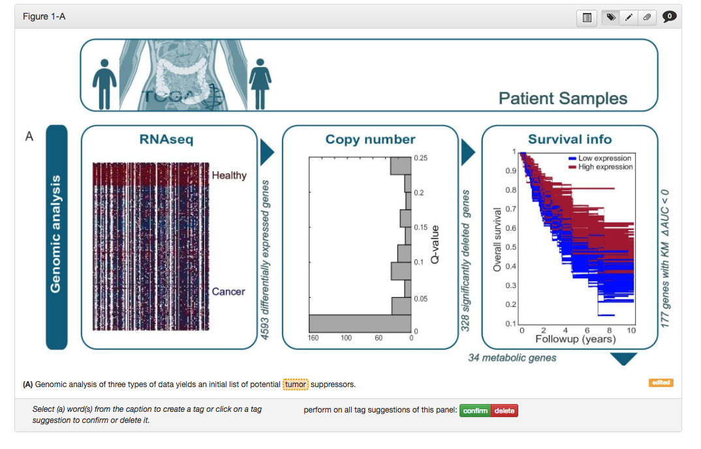
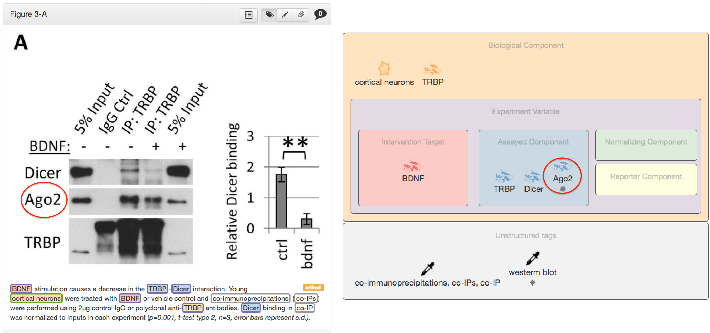
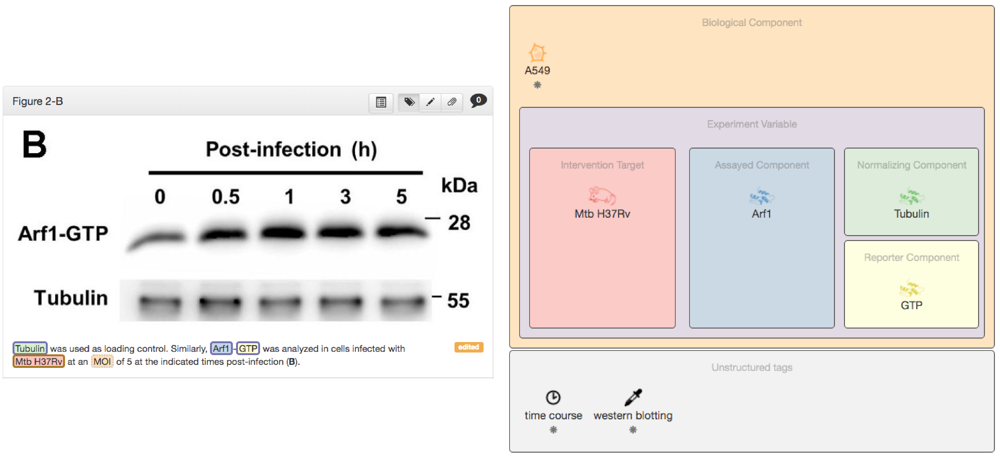
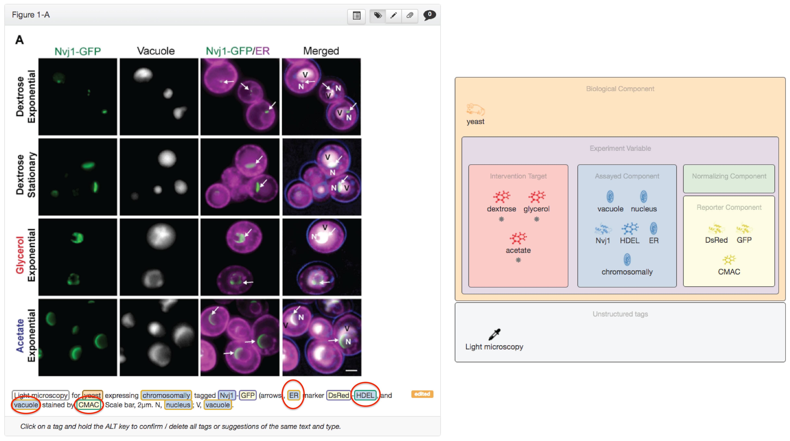
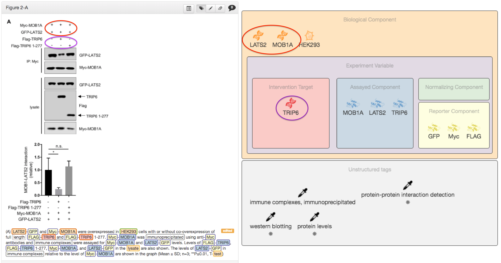
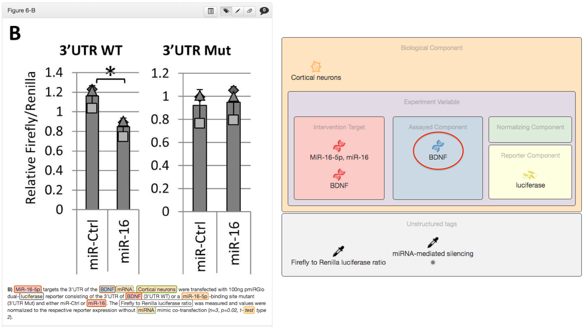
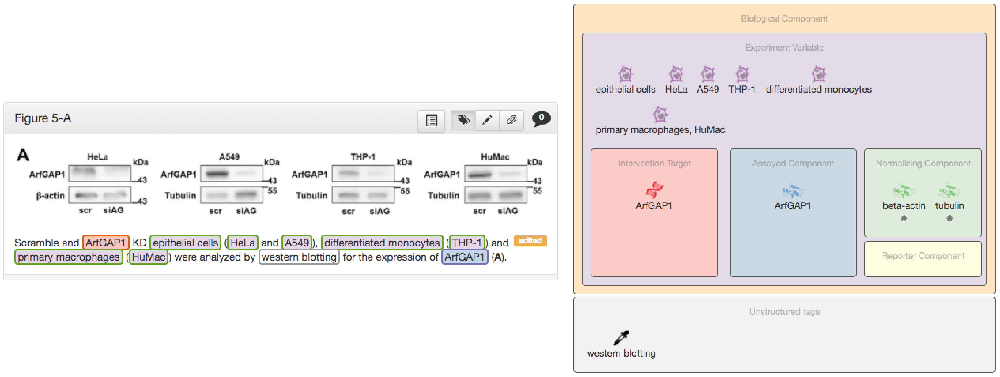
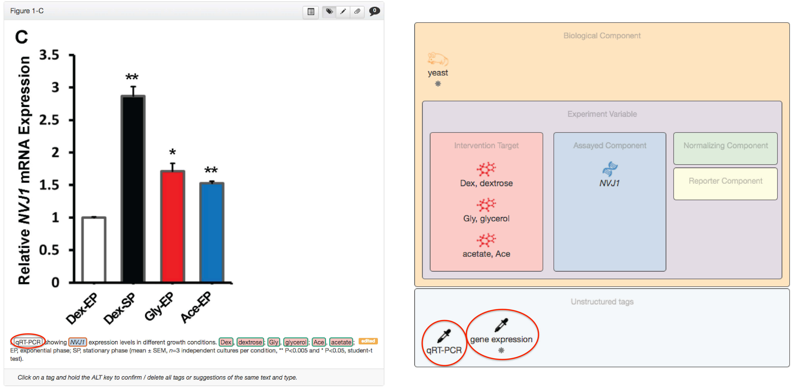
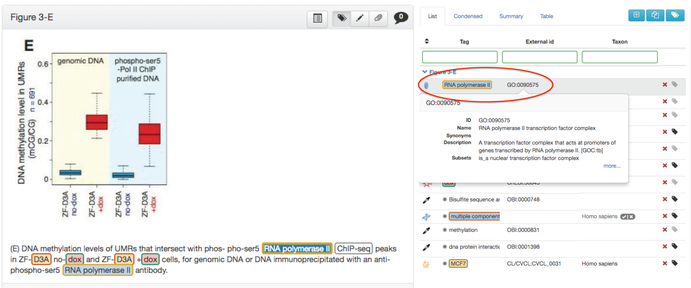
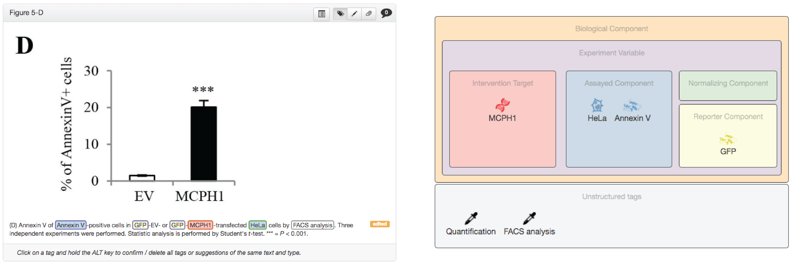

This document describes the SourceData knowledge model used to annotated figure panels in scientific
publications.
This draft is a work in progress.
Introduction
Experiments in cell and molecular biology involve the empirical manipulation, observation and description of
biological entities. Biological and chemical entities can be entire organisms, a subset of their
constituents or part of the experimental milieu.
SourceData description of the data presented in scientific figures specifies the entities that are
relevant to the scientific meaning of the data. Annotation of attributes of such entities, of biological
processes or diseases are not yet part of the SourceData specification described in this document.
In the following sections of this document, we define the key concepts use in the SourceData annotation
process, including the partitioning of composite figures into coherent panels, the tagging of
entities, their assignments to types and roles and their normalization using
external identifiers.
Partitioning figures into panels
Conventional figures are composed of multiple panels and are associated with a description, the figure legend
(or figure caption), that explains the content of the figure. While figures tend to present a heterogenous
mixture of experimental designs and assays, individual panels are much more coherent. SourceData annotation
is therefore carried out at the level of individual panels.
A panel SHOULD be defined as a subset of a full figure such that all of the data
points/measurements/observations included in the panel are comparable to each other in a scientifically
meaningful way. It is often possible to define a single common observational assay across all
observations/data points presented in the same panel. In the majority of cases, panels correspond to the
visual panels spontaneously delimited by authors.
Each panel MUST be associated to its specific panel legend.
Tagging entities
Introduction
The primary source of information for SourceData annotation is the text of the panel legend and
the image of the figure. Relevant terms from the legend or from the image are attached to a tag that specifies their type and role and that
can be further linked to identifiers from external biological databases.
Tagging terms in figure legends
To be tagged, a panel MUST report experimental data. In the text of a panel legend, terms that correspond
to specific biological and chemical entities SHOULD all be tagged.

Schemes like the one shown above do not need to be annotated
In general, generic terms referring to broad classes of biological components (eg 'proteins',
'cells', 'animals') SHOULD NOT be tagged unless they refer to the object of an assay.
Some terms such as those referring to proteins or genes can be appended with
prefixes or suffixes that indicate a post-translational modification, a mutation or other
variations of the actual base term. In such case, pre- or suffixes SHOULD be left out and only
the base term SHOULD be tagged. In other cases, a prefix is added to an entity to denote
a species origin, in which case the prefix SHOULD be kept.
Adding terms missing from the figure legend
Terms can be added as floating tags to complement the description of an
experiment with entities that are missing from the text of the legend. These entities
typically appear on the image of the figure but not in the legend.

Key elements missing in the figure caption should be added as a floating tag: in this
example, the assayed component AGO2 is missing and was added as a floating tag.
When a generic term is used, such as "cell" or "transcripts", to refer to a specific entity, ie a
specific cell line or a specific mRNA, a floating tag SHOULD be used to refer explicitly to the
specific entity.
Entity types & normalization
Types
Entities are assigned to one of seven types spanning successive levels
of biological organisations (Table 1). Each type is mutually exclusive. If an entity is
linked to an identifier from an external resource, it SHOULD use the resource associated to its type
according to Table 1:
Table 1. Entity types and the corresponding resources to which they can be linked.
If an entity does not fit any of the predefined types, the undefined type
is assigned. By definition, undefinedentities cannot be linked to any external resources.
In omics experiments, the number of entities measured is too large to be all listed explicitly. It is
then nevertheless possible to represent the experiments by adding as floating tag the reserved
words multiple components and assign the appropriate type (see also Appendix ).
Linking to standard identifiers (normalization)
In the normalization process,
entities SHOULD be linked to one or several identifiers of the external resources corresponding
to the entity's type (see Table 1). If an entity is linked to multiple identifiers,
it MUST mean that there is uncertainty about the exact identity of the entity.
Identifiers pointing to curated records of external databases SHOULD be preferred over identifiers
referring to non-curated records. If relevant records exist both in the primary and secondary resources
listed in Table 1, identifiers from the primary resource SHOULD be used.
Entity roles
Introduction
Biological components listed in the caption of a figure each play a different role in the experimental design: some components are altered in a
controlled manner, others remain untouched by the experimenter, and some are directly or indirectly
assayed to perform measurements or observations. Accordingly, the following roles are defined:
A biological component is a generic category for any
experimentally relevant component which does not fit any of the other defined roles within
SourceData. Often it will contain the organism, the cell, or a generic treatment that is present across all
conditions.
Assayed components
An assayed component is the component that is
measured or observed.

In the example above, tubulin is the normalizing component.

In this case, HDEL is an ER marker, so it is captured as an assayed component. In
addition, because there is a specific reference to the ER in the legend, ER is also captured as an
assayed component. Note that in this example there is a second marker, CMAC, which is however
a reporter as is therefore captured as a reporter for vacuole, which is labelled as an
assayed component
Controlled variables
An controlled variable (also called perturbation, intervention, manipulation, alteration or independent variable) is a component that is experimentally altered. An controlled variable
MUST be targeted and MUST be controlled. This implies that the experiment MUST involve the same
experimental system across experimental groups and MUST involve a comparison between several
experimental groups to test whether the controlled variable causes an effect on the assayed component.

MOB1A and LATS2 are both overexpressed across all conditions in this experiment, i.e., they
are not controlled for. The only entity that is differentially manipulated in this experiment is
TRIP6. Thus, both MOB1A and LATS2 are considered biological components and TRIP6 is cosidered
the controlled variableNote that the controlled variable through transfection of FLAG-TRIP6 is of type gene. This example
is also a good example of where it is appropriate to add a floating tag when key elements
(assayed or controlled variable) are missing from the figure legend.
Reporter components
A reporter component is used as a proxy to
measure or observe indirectly an assayed component of interest to which it is linked as part of a
synthetic or engineered construct.

In this luciferase experiment, what is being measured is the effect of miR-16-5p on the
3'UTR of Bdnf, so Bdnf is labelled as the assayed component.
A normalizing component is a component that is assayed
for the purpose of providing baseline measurements from each experimental group so that the the data can
be normalized across groups.
When a component is used to compare multiple experimental groups but it is not possible to clearly
infer a cause-and-effect relationship between this component and the assayed components of
the experiment, the component is said to be an experimental
variable.

In this example, expression of ArfGAP1 is assayed in several cell types in parallel. This is
the prototypical definition of an experimental variable.
Tagging experimental assays
In addition to entities, SourceData is also experimenting with the tagging of non-entity terms. In
particular, the experimental assay used to
observed or measure the assayed components of an experiment are tagged and normalized to identifiers
either from the BioAssay ontology (BAO) or from the Ontology for
Biomedical Investigations (OBI)

In this example, the experimental assay is 'gene expression measurement' and the method
is qRT-PCR. Because qRT-PCR is mentioned in the figure legend, it is captured. However, 'gene
expression' is also added as a floating tag to capture the experimental assay for the
experiment.
Time-related variables
Time-related variable: add a floating tag “time course” or “age”
to indicate comparison of an controlled variable or an assayed component over time within an experiment.
Physical variables
A Physical variable refers to particular experimental conditions,
e.g. 'cold exposure', 'footshock', etc. Add them only when explicitly mentioned in the figure legend.
Special cases: Protein complexes, FACS, cell cycle phases and DNA staining
Some experimental designs are unique in nature. For the following cases, these guidelines should be observed:
Protein complexes: although the intuitive normalization for protein complexes would be of type
protein, it is more adequate to assign them the type "subcellular component" because the Gene
Ontology (GO) database contains normalized references for protein complexes. An example of this
would be RNA Polymerase II, which is made up of a number of individual subunits. See the example
below

Notice how in this example RNA-Pol-II is assigned the type "subcellular component",
which can be normalize to the GO database.
FACS experiments: for FACS experiments, SourceData captures both the cells and the DNA (or whichever
element is stained and sorted) as assayed components

In this example, HeLa cells are stained with AnnexinV to measure cell death. Both HeLa
cells and AnnexinV are captured as assayed components.
Cell cycle phases: at present, SourceData does not include cell cycle phases as time elements. Cell
cycle phases may be added when appropriate to experimental variable or biological
component as class 'unknown'
DNA staining: for DNA stains like BrdU, EdU, etc., SourceData captures DNA as the assayed
component and 'BrdU staining' as the experimental assay
Representing 'omics' experiments
For experiments performing a large number of measurements (>15-20), for example in metabolomics, genomics,
transcriptomics and proteomics, the assayed components cannot be listed individually. The following
tentative guidelines are then followed:
The reserved expression 'multiple components' should be included as floating tag, with
the relevant entity type and with the role assayed component.
Note how individual metabolites are captured under the expression
multiple components in this example.
Both the measurement type (protein expression, protein-DNA interactions, protein-protein
interactions, etc...) and the assay technology (experimental platform such as the sequencing
platform, mass spec platform, etc...) as mentioned in Materials & Methods should be tagged as
experimental assay, if necessary as floating tag.
For panels representing different analyses of the same underlying raw data (e.g. heatmap, PCA,
correlation matrix), only the primary representation, i.e., first instance of the data should
be tagged.
Guidelines for author queries
When in doubt about the normalization of an entity, authors can be queried via the validation interface. The following should be systematically queried to ensure accurate annotation:
Systematic queries
Authors should always be asked to confirm the assigned id for the following entities:
Disease
Cell lines (particular attention to hierarchy)
Strains
Cell types (particular attention to immune lineages)
Molecules (when normalized to PubChem)
In addition, queries should be raised in these scenarios asking authors to provide or clarify an id:
Context-dependent queries
Proteins:
Several id's
No id
Species of protein unclear
Genes:
Several id's
No id
Species of gene unclear
The full list and content of pre-compiled author queries can be found here